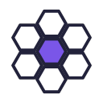
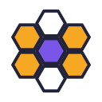
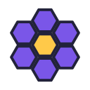
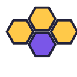
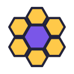
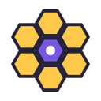
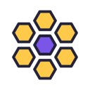
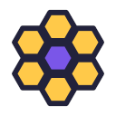

03 · the cells in script colours04 · a note in the centre cell05 · a check in the centre cell06 · a crown on the centre cell

07 · empty cells round a full one

08 · honey in some cells

09 · purple comb, gold centre10 · three cells

11 · four cells, a cluster

12 · centre cell bigger

13 · centre cell glowing14 · a bee on the centre cell

15 · open comb, gaps

16 · thick outline, flat
Black
01 · 08 as it is02 · pointy top03 · the cells in script colours04 · a note in the centre cell05 · a check in the centre cell06 · a crown on the centre cell07 · empty cells round a full one08 · honey in some cells09 · purple comb, gold centre10 · three cells11 · four cells, a cluster12 · centre cell bigger13 · centre cell glowing14 · a bee on the centre cell15 · open comb, gaps16 · thick outline, flat